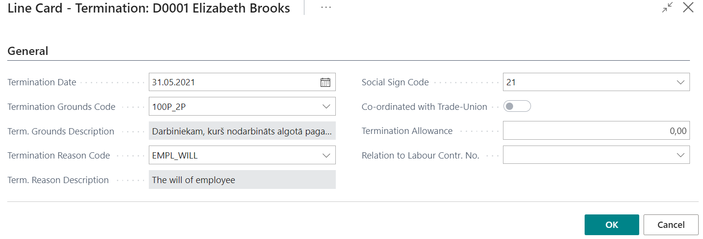
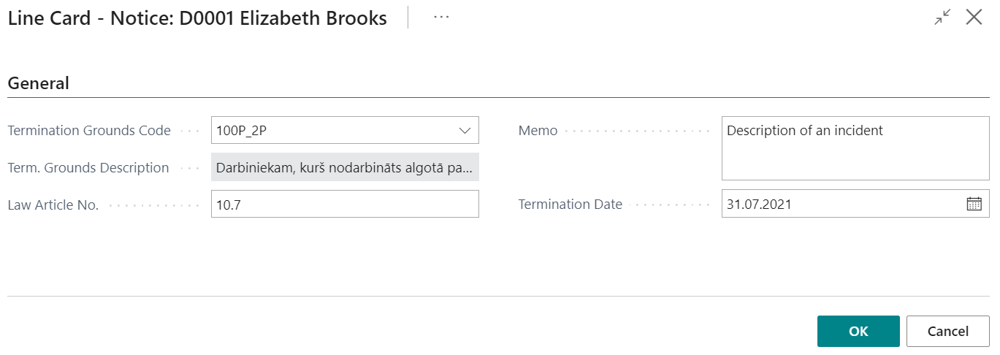
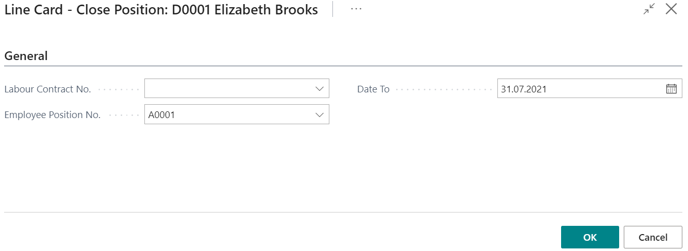
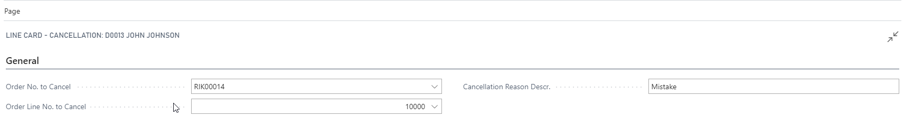

Examples of Personnel Orders
Termination order
The following fields are required for the order of termination:

- Termination Date;
- Termination Grounds Code – a code from the list Grounds for Termination;
- Term. Grounds Description;
- Termination Reason Code – a code from the list Termination Reasons;
- Term. Reason Description;
- Social Sign Code;
- Co-ordinated with Trade-Union – if the employee is not the member of the union, then this field is not active;
- Termination Allowance.
- Relation to Labour Contr. No.
Before the posting of the termination order, system checks:
- Is the employee recruited before the termination date;
- Is the employee not already terminated before;
- Is the employee in a trade union and is it aligned with the trade union.
If any of these conditions is not fulfilled, then the system does not allows to post the order.
Position Change Order
The following fields are required for the order of position change:
- Labour Contract No. - If for this event an alteration to the labour contract was made, then select the alteration number and all other related fields will be filled in from the labour contract card, including payroll components;
If an alteration wasn't made then you should fill all below fields, excluding the Labour Contract No.
- Employee Position No. – position number what should be replaced;
- Primary Position – enable if it is primary position;
- Employee Position Description;
- Position Code – a code of the new position;
- Position Description;
- Department Code – a code of the department of the new position;
- Department Name;
- Social sign Code;
- Date From – from which date the new position is effective;
- Planned Date To – planned due date;
- Date To – due date of the new position. A date what comes after the previous position steps into force;
- Salary Type – aggregated or normal working time
- Loading;
- Cycle Calendar – enable if the working time is organized according to the shift;
- Calendar Code;
- Calendar Name;
- Cycle Serial Number.
Loading Change Order
The following fields are required for the order of loading change:

- Labour Contract No. - If for this event an alteration to the labour contract was made, then select the alteration number and all other related fields will be filled in from the labour contract card, including payroll components;
If an alteration wasn't made then you should fill all below fields, excluding the Labour Contract No.
- Employee Position No. – position number what should be adjusted;
- Primary Position – enable if it is primary position;
- Employee Position Description;
- Date From – from which date the new conditions is effective;
- Planned Date To – planned due date;
- Date To – due date of the new conditions. A date what comes after the previous conditions steps into force;
- Salary Type – aggregated or normal working time;
- Loading;
- Cycle Calendar – enable if the working time is organized according to the shift;
- Calendar Code;
- Calendar Name;
- Cycle Serial Number.
Izmainot slodzes vērtību laukā Slodze, sistēma izmainīs slodzi pie algas komponentēm, kā arī izrēķinās jauno vērtību, kas pienākas par sekojošu slodzi.
Rīkojums par algas maiņu
Algas maiņas notikums satur sekojošu informāciju:

- Darba līguma Nr. – ja par algas maiņu tika veidots darba līguma grozījumu, tad šajā laukā to izvēlas un visi pārējie lauki, ieskaitot algas komponentes laukus tiks aizpildīti no konkrēta grozījuma;
Ja darba līguma grozījumi netika veidoti, tad ir jāaizpilda pārējie lauki, izņemot Darba līguma Nr.
- Darbinieka amata Nr. – darbinieka amata numurs, kuru ir nepieciešams nomainīt;
- Galvenais amats – atzīme par to, ka tas ir galvenais amats;
- Darbinieka amata apraksts;
- No datuma – no kura datuma jaunā alga būs spēkā;
- Līdz datumam – līdz kuram datumam jaunā alga būs spēkā. Pēc tam spēkā iestājās iepriekšējās darba algas nosacījumi.
Jauno darba algu ievada caur algas komponentēm. Tiks noslēgtas visas aktīvas (beigu datums nav norādīts vai ir vēlāks par rīkojuma “No datuma”) darbinieka algas komponentes ar datumu, kas ir vienu dienu pirms rīkojuma par algas maiņu sākuma datuma.
Rīkojums par prombūtni
Prombūtnes rīkojuma rindas karte satur sekojošu informāciju:

Cilne Visp.info:
- Prombūtnes kods;
- Prombūtnes veida kods;
- Prombūtnes apraksts – tiks aizpildīts no prombūtnes koda;
- No datuma - pēc noklusējuma lauks aizpildās no Plānotās darbinieku prombūtnes klasifikatora, taču to var labot;
- Līdz datumam – pēc noklusējuma lauks aizpildās no Plānotās darbinieku prombūtnes klasifikatora, taču to var labot;
- Dienas pēc kalendāra;
- Darbinieks aizvietotājs;
- Veidot algas apmaksu- gadījumā, ja pirms prombūtnes jāaprēķina alga līdz prombūtnes sākumam, jāieliek ķeksis. Rezultātā prombūtnes reģistrā tiks izveidot ieraksts ar prombūtnes kodu ALGA_PER (standarta uzstādījumi) un starpizmaksas sarakstā var aprēķināt gan prombūtnes naudu, gan algu pirms prombūtnes;
- Izlaist starpizmaksās – ielikt ķeksi gadījumā, ja nevajadzētu šo prombūtni aprēķināt starpizmaksas sarakstā
- Sadalīt pa periodiem – rīkojuma grāmatošanas rezultātā sistēma sadalīs prombūtni pa kalendāra mēnešiem, aizpildot lauku Turpinājums. Tādā veidā aprēķins par katru mēnesi tiks veikts atbilstošajā mēnesī.
Cilne Komandējums:
- Komandējuma vieta - valsts;
- Komandējuma mērķis;
Rīkojums par disciplinārsodu
Disciplinārsoda rīkojuma rindas karte satur sekojošu informāciju:

- Disciplinārsoda kods – no disciplinārsodu klasifikatora;
- Disciplinārsoda apraksts;
- Datums – rīkojuma datums;
- Piezīmes – brīvā tekstā var uzrakstīt rīkojuma tekstu.
Rīkojums par uzteikumu
Uzteikuma rīkojuma karte satur sekojošu informāciju:

- Atbrīvošanas pamata kods – no atbrīvošanas pamatu klasifikatora;
- Atbrīvošanas pamata apraksts;
- Likuma panta Nr.;
- Piezīmes – brīvā tekstā var uzrakstīt rīkojuma tekstu;
- Atbrīvošanas datums.
Rīkojums par piemaksu / atvilkumu
Piemaksas vai atvilkuma rīkojuma karte satur sekojošu informāciju:

- Datums – piemaksas datums;
- Komponentes kods – piemaksas komponentes kods no klasifikatora;
- Komponentes apraksts;
- Summa – piemaksa – bruto summa;
- Piezīmes – teksts brīvā formā.
Rīkojums par papildus amatu
Tāpat kā rīkojumu par pieņemšanu darbā arī rīkojumu par papildus amatu ir iespējams izveidot gan uz darba līguma grozījumu pamata, gan arī kā jaunu un neatkarīgu dokumentu. Ar šo notikumu tiek izveidots jauns darbinieka amats (papildus esošajiem). Par papildus amatu tiek norādīta sekojoša informācija:

- Darba līgums – no iegrāmatotiem darba līgumiem (ja šim notikumam tika izveidots atsevišķi grozījumi);
- No datuma – no kura datuma darbiniekam tiek piešķirts papildus amats;
- Plānotais līdz datums – plānotais beigu datums;
- Līdz datumam – līdz kuram datumam darbiniekam tiek piešķirts papildus amats. Termiņa beigās tiek atjaunots atkal iepriekšējais darbinieka amats;
- Amata kods – papildus amata kods;
- Struktūrvienības kods – papildus amata struktūrvienības kods – ielasās automātiski, izvēloties amata kodu;
- Struktūrvienības nosaukums;
- Slodze;
- Cikla kalendārs;
- Kalendāra kods;
- Kalendāra nosaukums;
- Cikla kārtas nr.
Ja pirms rīkojuma izveidošanas tika izveidots darba līguma grozījums, tad algas komponentes ielasīsies no darba līguma grozījuma algas komponentēm, kuras labot nebūs iespējams. Pirms rīkojuma par papildus amatu grāmatošanas sistēma pārbauda, vai darbiniekam uz No datuma ir aktīvs statuss.
Rīkojums par amata atcelšanu
Amata atcelšanas rīkojuma karte satur sekojošu informāciju:

- Darba līguma Nr. – no iegrāmatotiem darba līgumiem (ja šim notikumam tika izveidots atsevišķs grozījums);
- Darbinieka amata Nr. – norāda amatu, kurš ir jāatceļ;
- Līdz datumam – līdz kuram datumam amats ir aktīvs.
Pirms rīkojuma par amata atcelšanas grāmatošanas tiek pārbaudīts, vai darbinieks uz pieņemšanas datumu ir aktīvs darbinieks.
Iegrāmatoto rīkojumu anulēšana
Sistēmā anulēt ir iespējams gan visu rīkojumu, gan arī tikai konkrētu rindu. Rīkojumu vai rīkojuma rindu var anulēt no iegrāmatotā rīkojuma, bet izmantojot rīkojumu ar notikuma veidu Anulēšana var anulēt tikai konkrētu rindu.
- Rīkojuma anulēšana caur iegrāmatoto rīkojumu
Atver sarakstu Iegrāmatotie Personāla rīkojumi
Atrod rīkojumu, kas ir jāanulē.
Var anulēt visu rīkojumu, klikšķinot uz
 un
un  , vai arī anulēt tikai konkrētu rindu klikšķinot uz un
, vai arī anulēt tikai konkrētu rindu klikšķinot uz un 
Ja rīkojums tiek anulēts caur iegrāmatotiem rīkojumiem, tad sistēmā nevar pievienot aprakstu, kāpēc līgums ir anulēts, kā arī netiek izveidots dokuments. Taču tā ir vienīgā iespēja, kā var anulēt visu rīkojumu.
- Rīkojuma anulēšana, izmantojot notikuma veidu Anulēšana. Anulēšanas rīkojums sastāv no sekojošiem laukiem:

- Rīkojuma Nr. anulēšana – iegrāmatotā rīkojuma nr., kurš jāanulē;
- Rīkojuma rindas Nr. anulēšanai –norāda, kura rinda ir jāanulē;
- Anulēšanas iemesla apraksts.
Anulēt var jebkuru rīkojuma veidu pie nosacījuma, ka nav izveidots algas saraksts. Tomēr jāatceras, ka rīkojumi ir jāanulē secīgi - tas nozīmē, ka ja, piemēram, darbinieks ir pieņemts darbā ar pieņemšanas rīkojumu, tad tam ir mainīta alga ar algas maiņas rīkojumu, tad, lai anulētu pieņemšanas rīkojumu, sākumā jāanulē rīkojums par algas maiņu. Anulētie rīkojumi no sistēmas nekur nepazūd un tos var apskatīt gan iegrāmatoto rīkojumu sarakstā, gan arī no darbinieka kartiņas sadaļā Personāla ieraksti.